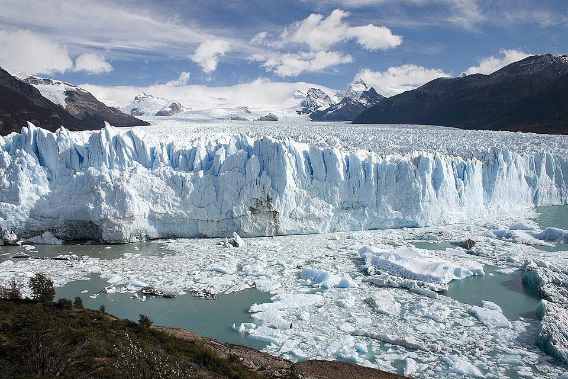

Glaciares y hielo
La Antártida, Groenlandia y los glaciares de montaña guardan casi el 70 % del agua dulce del planeta. Y están cambiando deprisa.


Un glaciar es una masa de hielo formada por la nieve acumulada y compactada durante cientos o miles de años, tan pesada que se desliza lentamente bajo su propio peso, como un río a cámara lenta. Hoy el hielo cubre alrededor del 10 % de las tierras emergidas y guarda cerca del 70 % del agua dulce del planeta.
Los dos grandes casquetes
- La Antártida está cubierta por un manto de hielo de hasta 4,8 km de espesor. Contiene alrededor del 90 % del hielo del mundo. Si se fundiera por completo, el nivel del mar subiría unos 58 metros.
- Groenlandia tiene el segundo mayor casquete: su fusión total elevaría el mar unos 7 metros.
El hielo del Ártico, en cambio, es sobre todo hielo marino que flota sobre el océano, de unos pocos metros de grosor. Al fundirse no sube el nivel del mar, igual que un cubito que se derrite no desborda el vaso, pero sí calienta el planeta, porque el océano oscuro absorbe la luz que antes reflejaba el hielo blanco.
Ríos de hielo
Los glaciares avanzan desde unos centímetros hasta decenas de metros al día. El Perito Moreno, en la Patagonia argentina, avanza unos dos metros diarios; su frente, de 60 metros de altura, se rompe con grandes estruendos y lanza bloques de hielo al lago. Cuando un glaciar llega al mar, los bloques que se desprenden se convierten en icebergs. Solo vemos alrededor de una décima parte: el resto queda bajo el agua.


Los glaciares son grandes escultores: excavan valles en forma de U, arrastran rocas enormes a cientos de kilómetros y, al retirarse, dejan lagos como los de los Pirineos o el de Sanabria.
Un archivo del clima
Cada capa de nieve que se convierte en hielo atrapa diminutas burbujas de aire de su época. Perforando el hielo antártico, los científicos han extraído testigos de hielo con aire de hace más de 800.000 años. Gracias a ellos sabemos cómo ha variado el dióxido de carbono y la temperatura a lo largo de las glaciaciones, y que los niveles actuales de CO₂ no tienen precedentes en todo ese tiempo.
Las edades de hielo
En los últimos 2,6 millones de años la Tierra ha alternado glaciaciones con periodos cálidos como el actual, al ritmo de pequeños cambios en la órbita terrestre. En el último máximo glacial, hace unos 20.000 años, el hielo cubría el norte de Europa y Norteamérica, el nivel del mar estaba unos 120 metros más bajo y se podía caminar de Asia a América. En los Pirineos, Sierra Nevada o la cordillera Cantábrica había grandes glaciares.
Los glaciares de España
Hoy solo quedan pequeños glaciares en los Pirineos, como los del Aneto, el Monte Perdido o la Maladeta, y están desapareciendo deprisa: han perdido más del 80 % de su superficie desde mediados del siglo XIX y varios ya se han convertido en simples heleros. Los científicos prevén que la mayoría desaparecerá en las próximas décadas. El glaciar más meridional de Europa, el del Veleta en Sierra Nevada, ya se extinguió.
Vídeos para entenderlo mejor
- Investigación climática al límite - El campo de hielo de la Patagonia | DW DocumentalDW Documental · 693 mil visualizaciones
- Los glaciares del futuro: esperanza sobre hielo finoDW Español · 138 mil visualizaciones
Los vídeos son de YouTube y de sus autores. Se cargan solo al pulsar sobre ellos. Ver todos los vídeos →